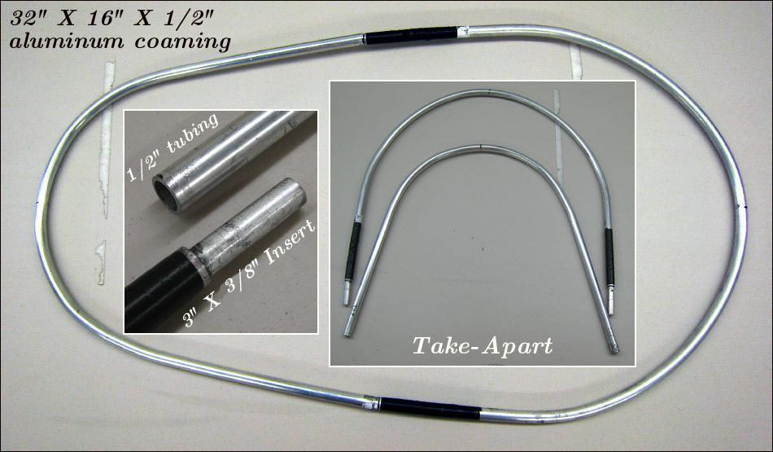

| Sonnet (Aluminum Coaming 1 of 2) | Menu Previous Page Next Page |
|
 The 32" X 16" (81cm X 41cm) take-apart coaming is made from 1/2" (13mm) aluminum tubing . The 3" (76mm) inserts are made from 3/8" (9.5mm) solid aluminum tubing and are either epoxied or riveted in place with 1.5" (38mm) in and 1.5"(38mm) out. The tubes are bent to shape using wood "bending forms" as seen on the next page. |
|